Semaine 6 : New York
Côté HyphTech
Rien de nouveau à signaler côté stage : on continue les tâches en cours, tout se passe bien.
Cette semaine, on l'a passée tous ensemble avec Thibault, chez Killian et Victor, le temps de retomber sur nos pieds après les péripéties du logement. Rien de plus à en dire.
Le week-end : direction New York
Gros morceau du week-end : on a eu la chance de partir à New York avec Killian, Victor et Thomas. Direction les États-Unis, avec un peu de préparation nécessaire en amont : passeport bien sûr, mais aussi le document I-94 et 30 dollars à payer pour passer la frontière terrestre.
Le passage de la douane a été plutôt long : une dizaine de voitures devant nous, une heure d'attente avant de passer.
Une fois arrivés, on a pu découvrir New York dès le soir même, puis toute la journée du samedi et le dimanche matin, avant de reprendre la route vers Sherbrooke.
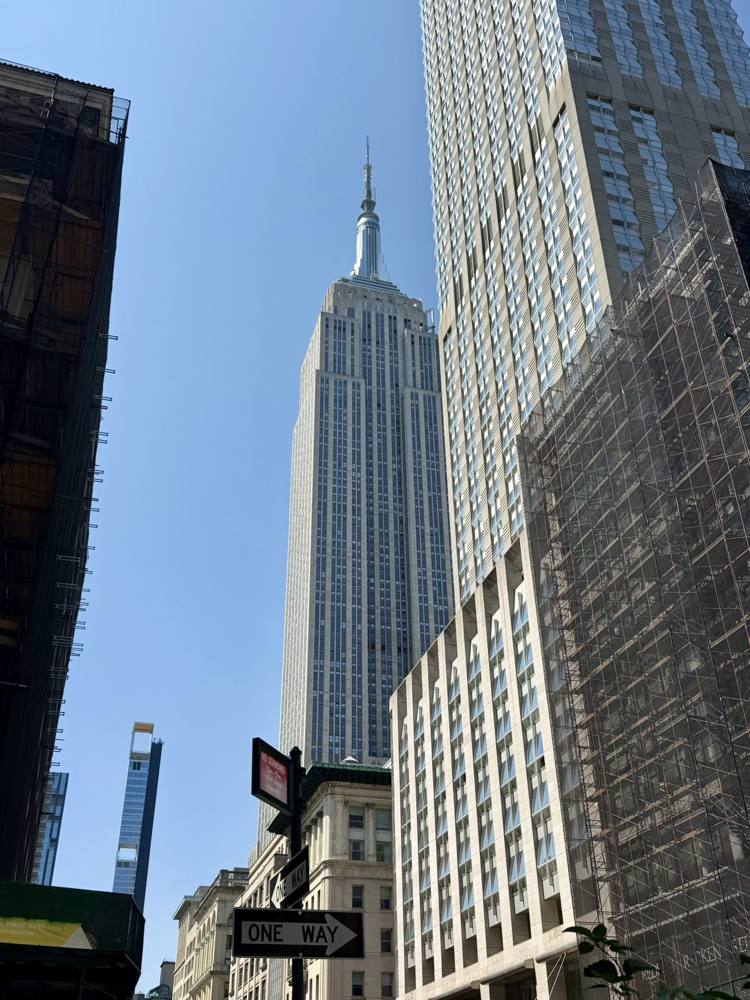
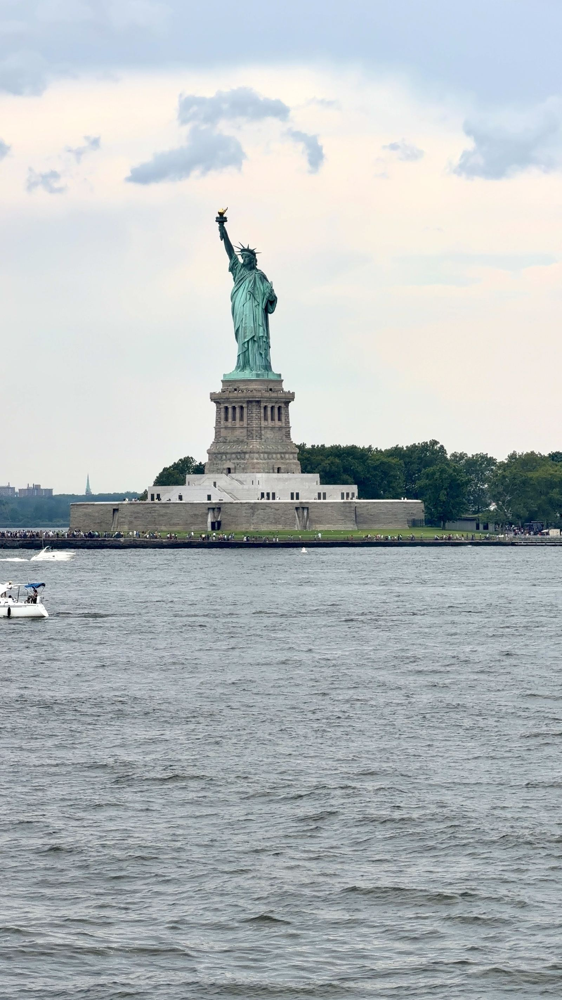
Une ville vraiment impressionnante, et du monde partout. Il faisait très chaud, mais assez supportable en ville puisque, comme souvent aux États-Unis, tout est climatisé. Beaucoup d'endroits que je ne connaissais qu'en photo jusque-là : j'ai eu la chance de les voir en vrai, pour de bon.
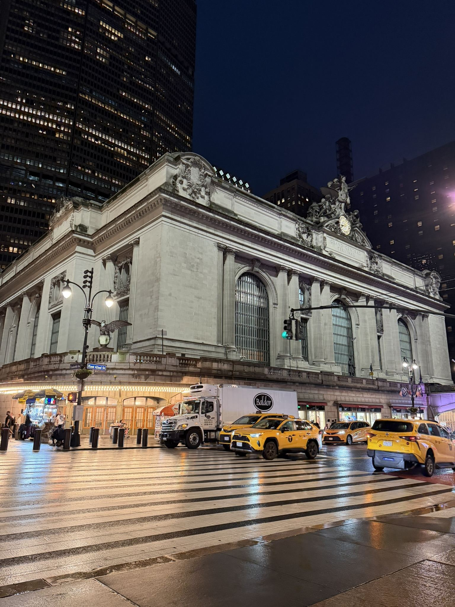
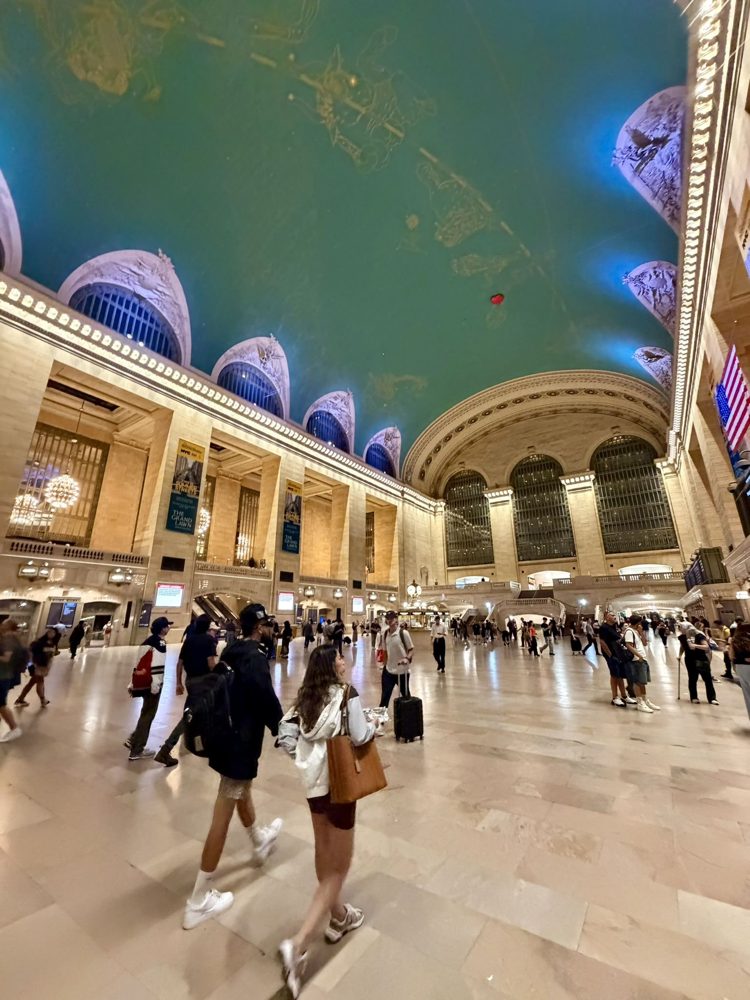
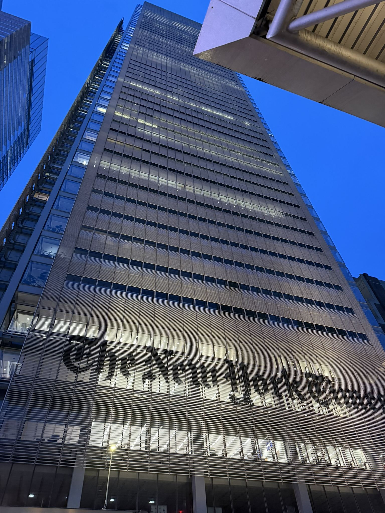
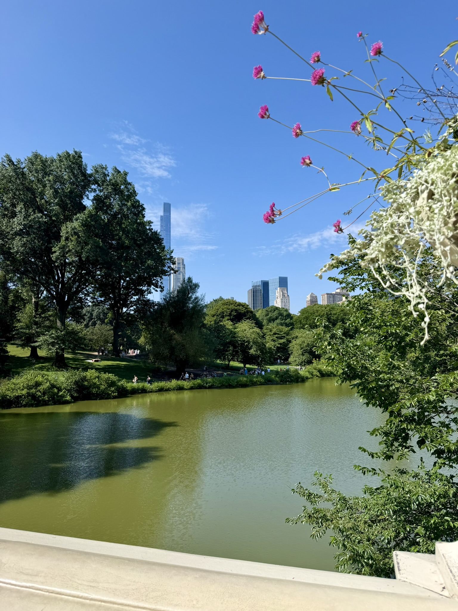
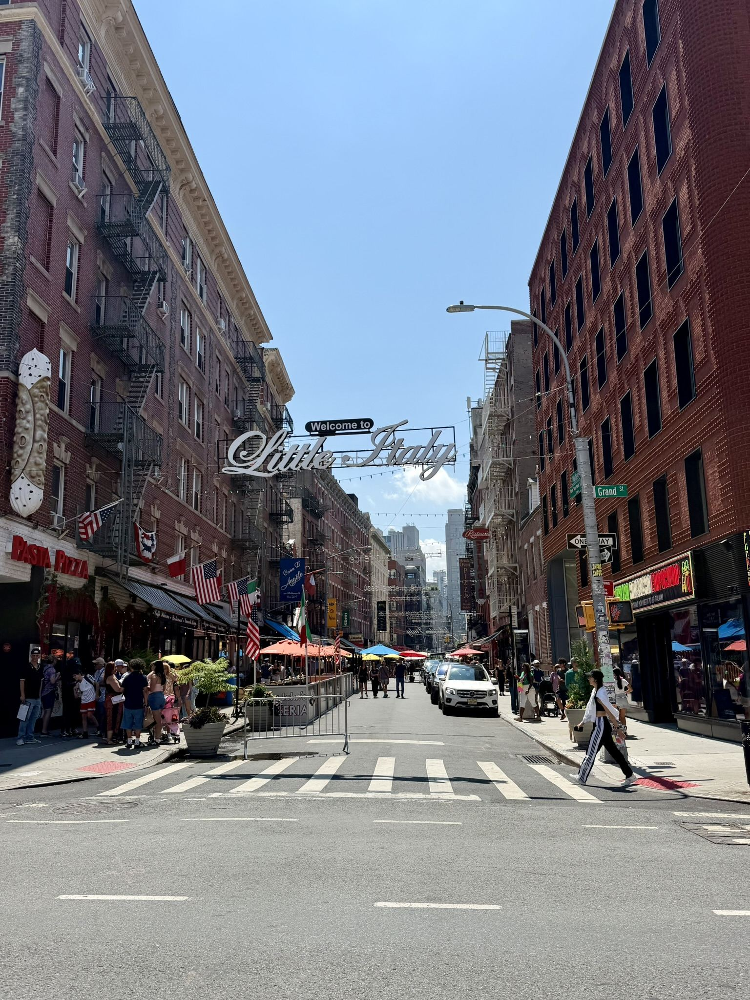
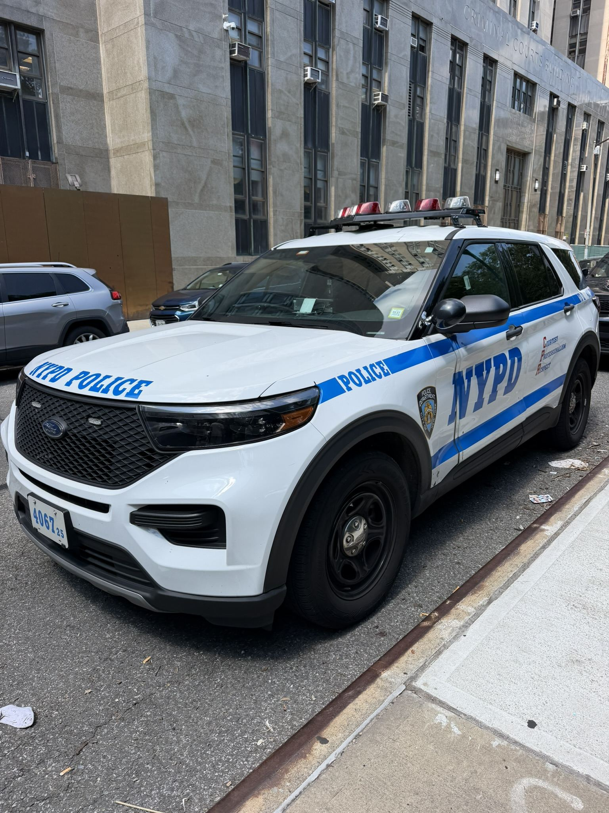
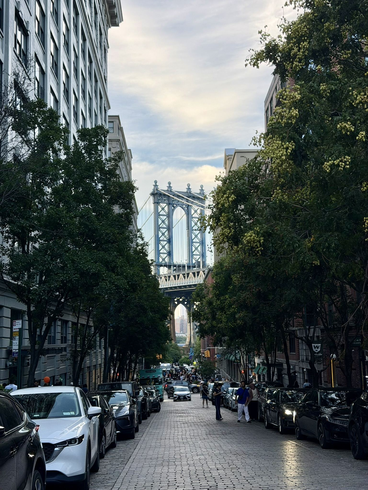
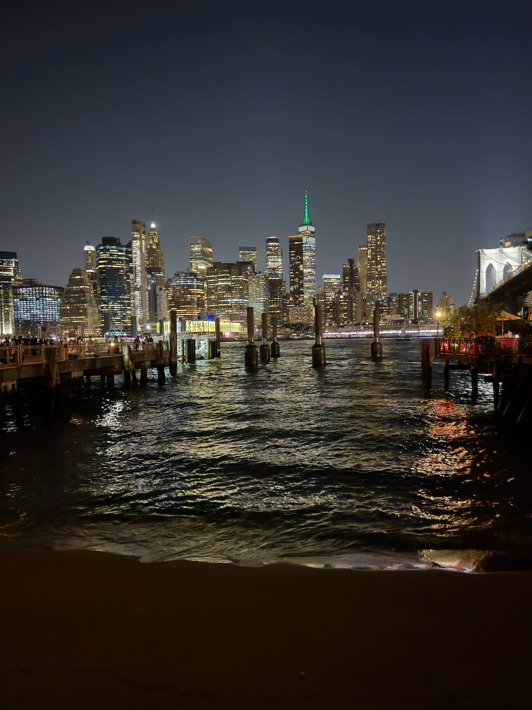
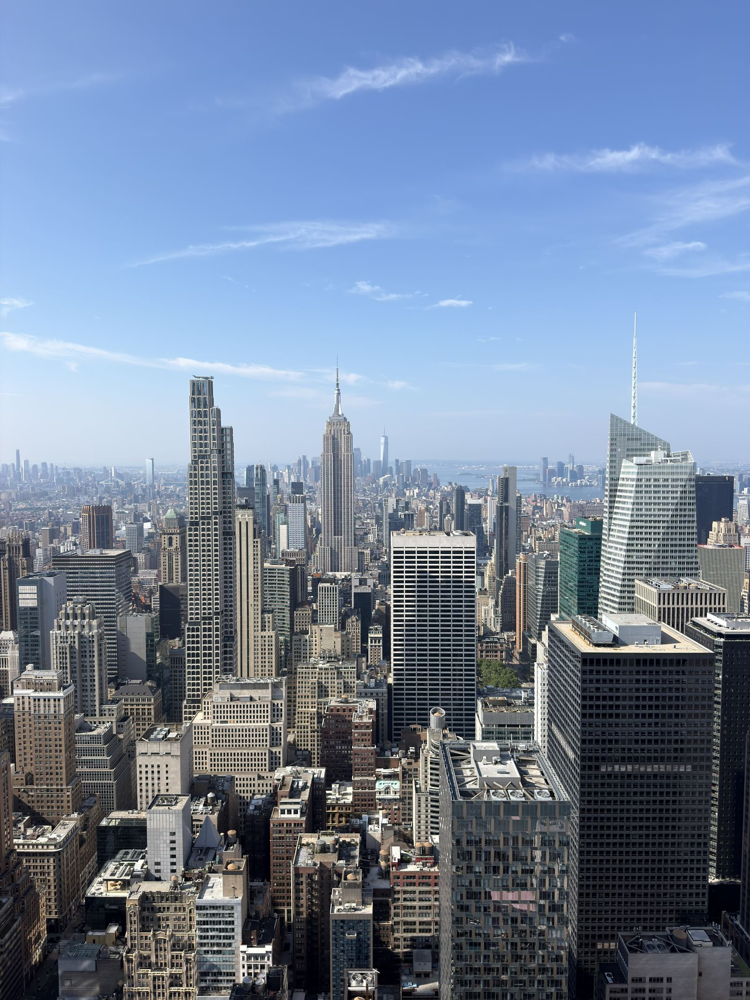
Aspect culturel de la semaine : la ville est chère, notamment côté nourriture, sans grande surprise. Mais les transports en commun sont globalement bien développés et pratiques, ce qui est plutôt cool (et un peu inattendu) pour une ville américaine, après le constat de la semaine 2 sur la dépendance à la voiture en Amérique du Nord.